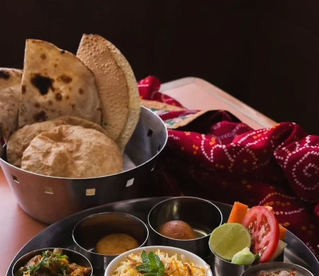
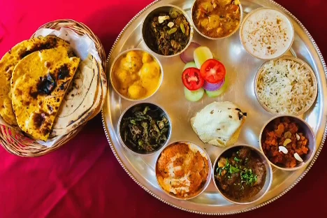
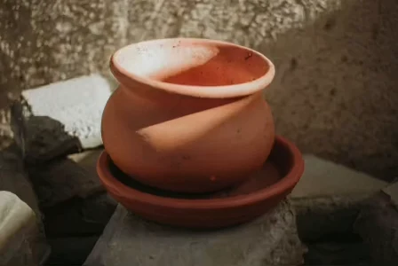

Aama’s Special Dal Bhat Thali Rs. 650
Lentils, jeera rice, seasonal tarkari and homemade achar.
आमाको भान्छा · Kesaliya Road Biratnagar ,Nepal
Dal bhat simmered from dawn, momos pleated by hand, chiya brewed in clay. At Aama Ko Bhanchha, every plate tastes like coming home.

From Aama’s kitchen
Lentils, jeera rice, seasonal tarkari and homemade achar.

Chicken curry with warm spices, served the full thali way.

Slow-cooked goat curry with rice, dal and sides.

Our Story
It began with one woman’s clay stove and a neighbourhood that wouldn’t stop coming back. Today the recipes carry the same warmth.
Read our story →Guest words
“The dal bhat tastes exactly like my grandmother’s. I had to stop and close my eyes. We come every Sunday now.”
Sunita R. · Lalitpur
“I asked for mild, they smiled, and the jhol momo changed my life anyway. Best table in Kathmandu.”
Daniel M. · Melbourne
“Booked the Wood Room for our anniversary. The staff treated us like family, cake on the house.”
Prakash & Mira T. · Bhaktapur